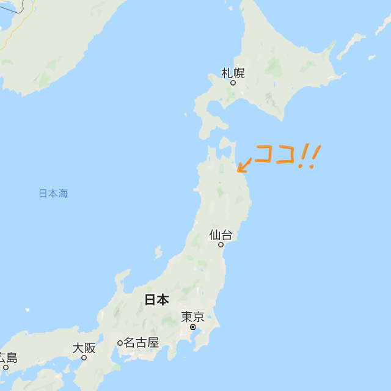
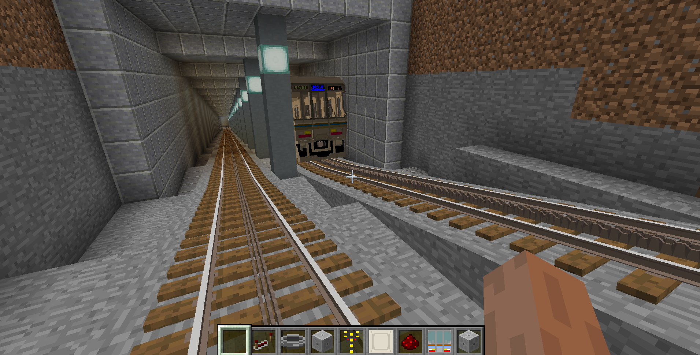

プロフィール
名前
渡辺晴輝
誕生日
2000年 3月 24日
出身地
青森県八戸市
出身校
八戸工業高等専門学校
電気情報工学コース
好きな食べ物
えび、かに、果物、ちくわの天ぷら

熱中していること
「minecraft」にmodを入れて、電車を走らせて遊んでいます。
抱負
努力を怠ることなく、でも継続可能なペースで自己研鑽を続けたいと思います。
とにかくスキルをもっとつけなければと燃えています。頑張ります！
私は人に尽くすことが好きなので、多くの人のために自分のアイデアや技術を活かせる日々を楽しみにしています。
同期へ一言
人見知りに思われがちですが、割と話すことは好きですよ。
たくさんお話して、協力して、高めあえるとうれしいです。